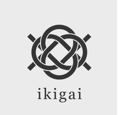

Tengo como objetivo personal alcanzar una vida plena repleta de felicidad y ayudar a la humanidad con grandes proyectos.

La inteligencia me persigue, pero yo voy más rápido
Tengo como objetivo personal alcanzar una vida plena repleta de felicidad y ayudar a la humanidad con grandes proyectos.
| Buenos días, tardes o noches a usted, lector o lectora. Soy Alejandro, un estudiante español de origen somalí de 2º Bachillerato de ciencias, que aspira a convertirse en estudiante de medicina, con el objetivo de trabajar fuera de España (ojalá vivir en Tailandia) y alcanzar grandes cosas. Si bien ahora mi mayor problema es no confundir a Carlos VI Maria de Isidro con la encima acetil-CoA, espero que en el futuro aspire a preocuparme por cosas más profesionales 😝. | |
| Soy un chico que destaca por ser capaz de saber cuándo y cómo sacar una sonrisa al que más lo necesite, pues lo que más feliz me hace en este mundo es ayudar a los demás. Esto entra dentro del dicho de Ikigai se traduce como "razón de vivir" y que ha servido como un pilar en mi vida para mi desarrollo personal efectivo. ¿Quieres saber más? Pulse aquí. |  |
Me gustaría destacar que tengo una serie de mascotas:
|
Si bien mis objetivos principales son claros, me gusta hacer todo tipo de cosas en mis ratos libres.
| Me gustan ámbitos científicos como el cuerpo humano, sobre todo los maravillosos campos de la neurología y el sistema inmune, pues a pesar de que son campos muy complicados el hecho de que pensemos o que sigamos vivos gracias a ellos me parece fascinante. |

|

|
Soy un tanto friki, pues me gustan jugar juegos de todo tipo (aunque me gusta mucho un juego de disparos llamado Valorant) y ver series de buena calidad como Breaking Bad o Dexter (series 10/10, totalmente recomendadas).
Disfruto pasar tiempo con mis amigos, quienes alegran mis días más oscuros, permitiendome que siga adelante con fuerzas. Además, me gusta viajar mucho.
¿Quieres participar en un viaje simulado? Pulse aquí 🚗 |
| Objetivo | Método | Ejemplo visualización |
| Alcanzar una nueva etapa de mi vida venciendo al jefe final (selectividad) | Estudiando lo máximo posible y sacrificandome al máximo |

|
| Sacarme el carnet de navegación naval | Estudiando las reglas, las mareas y el tipo de agua de los mares 🌊 |

|
| Recorrer el mundo en 67 días | Ahorrando lo suficiente para poder escaparme y explorar el mundo. |

|
Sitio web desarrollado por Alejandro Alcalde Pérez 2026
Dirección de correo: aalcper1312@g.educaand.es o alcaldeperezalejandro@gmail.com ✉️ .